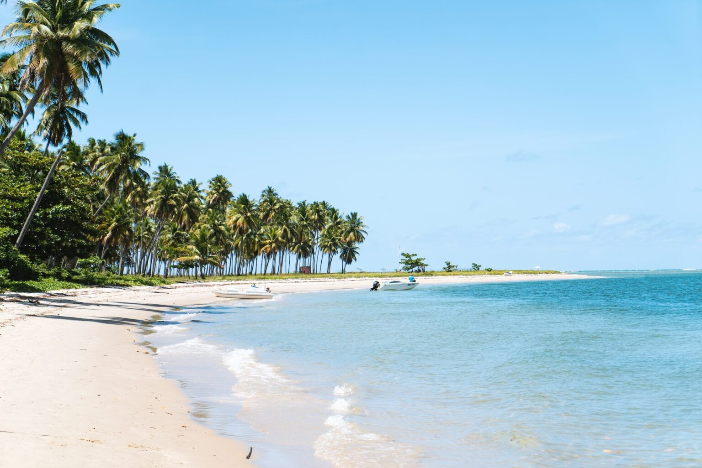

Cidade multicultural, onde encontramos traços portugueses, africanos, indígenas.Lugar de belíssimas praias.
As festas juninas são um grande evento com grande celebração do bumba meu boi, quadrilhas e outras danças típicas.
